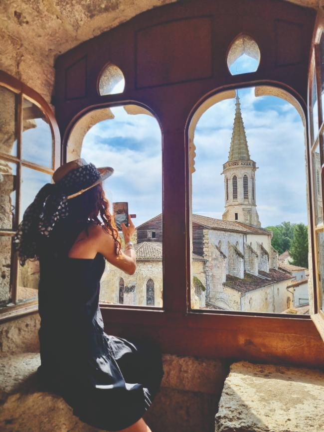
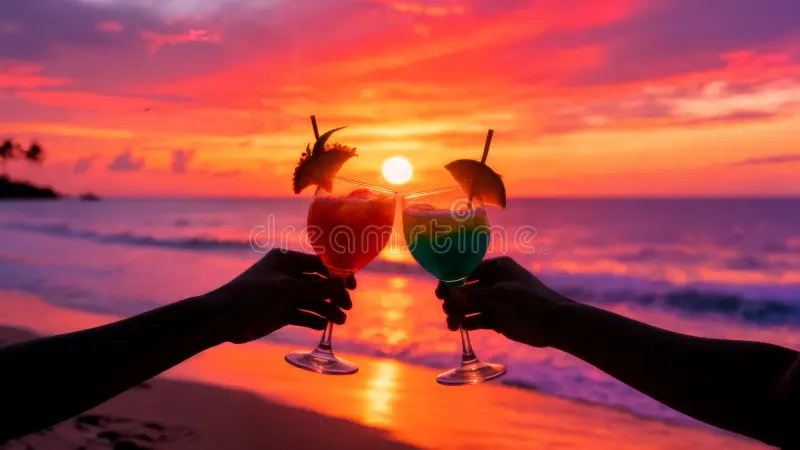
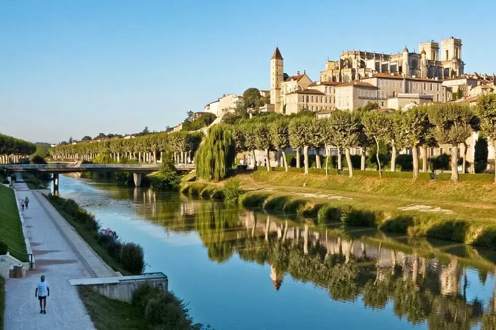
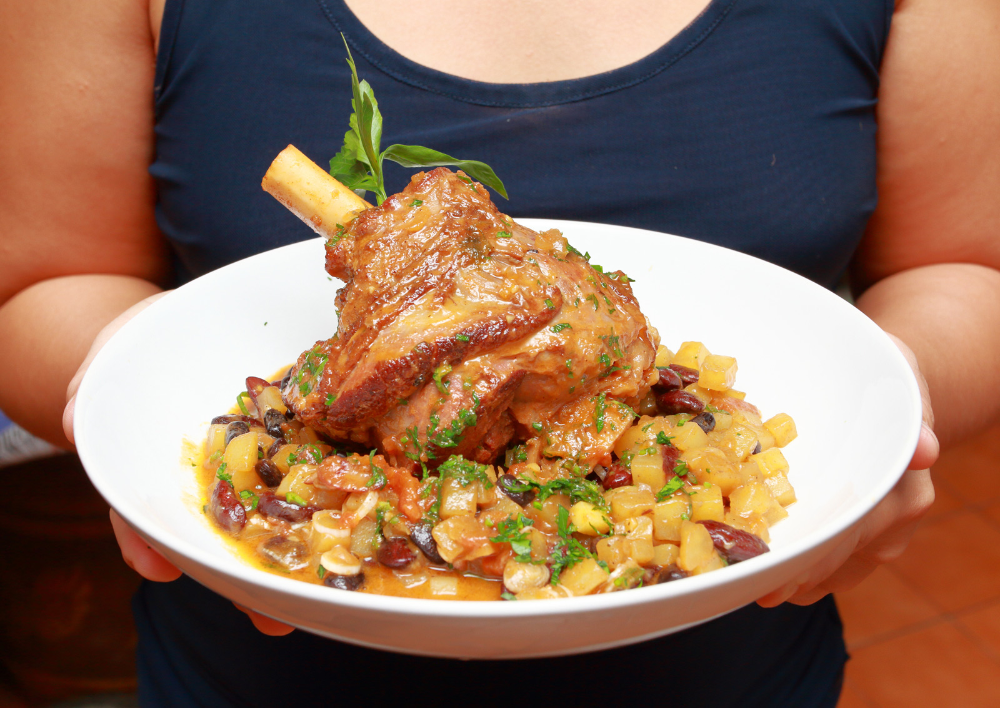
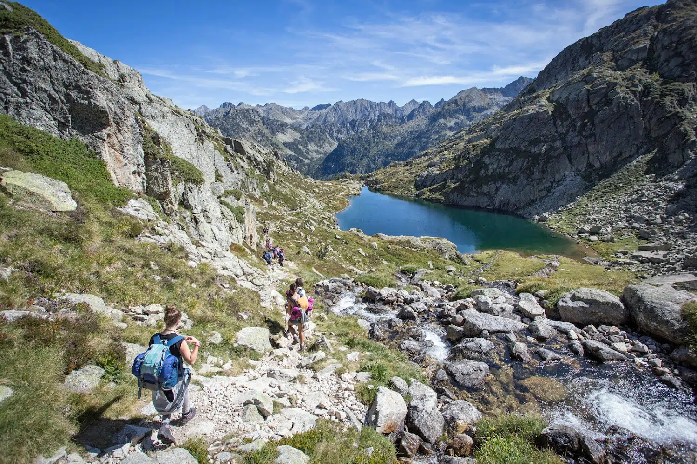

Esprit Tributrip
On dit souvent que les voyages transforment.
Chez Tributrip, nous pensons que ce ne sont pas les paysages qui changent une vie, mais les rencontres et le partage.
Tributrip est né d'un désir simple : créer des voyages où l'on ne coche pas des "incontournables", mais des instants vrais. Où l'on repart avec quelque chose de rare : une connexion authentique, à soi, aux autres et au monde.
La tribu est notre fil rouge.
Un mot chaleureux, qui évoque le cercle qui nous soutient : famille, amis, communauté. Dans nos voyages, ce lien se renforce, s'élargit, se réinvente. On part parfois avec sa propre tribu, parfois on en crée une nouvelle le temps d'un voyage.
Et il y a aussi la tribu que l'on découvre sur place : des habitants qui ouvrent leurs portes, partagent leur territoire et transmettent leur culture avec sincérité.
Nous créons les conditions pour que ces rencontres aient lieu — naturellement, profondément, humainement.
Voyager avec Tributrip, ce n'est pas s'éloigner.
C'est se rapprocher : des autres, d'un lieu, d'une culture… et de soi-même.
Notre démarche s'inscrit dans un tourisme régénératif : des voyages qui redonnent du sens, du souffle et du lien.
Au Mexique comme dans la France profonde, nous avançons aux côtés de femmes indigènes, d'artisans, de guérisseuses, de créateurs et de paysans qui veillent sur des traditions précieuses. Leur savoir, leur force et leur sensibilité inspirent nos parcours.
Avec eux, nous imaginons des expériences où se mêlent rituels ancestraux, ateliers créatifs et découvertes culturelles authentiques.
Toujours dans le respect, la réciprocité et la contribution : chaque voyage soutient ceux qui gardent la mémoire, nourrit des projets locaux et ouvre pour chaque voyageur un espace de transformation.


Qui sommes-nous
Voyageuse depuis l'adolescence, j'ai grandi dans le Gers, une terre authentique qui m'a appris la profondeur, la simplicité et le lien au vivant. Cette racine terrienne ne m'a pourtant jamais empêchée de rêver plus loin : à 16 ans déjà, je voulais faire le tour du monde et rencontrer toutes les façons d'être humain.
De l'Italie de mes ancêtres à l'Amérique Latine en sac à dos, des Andes à Puerto Rico, puis jusqu'au Mexique — véritable coup de cœur culturel et spirituel — chaque voyage a été une rencontre, souvent douce, parfois bouleversante, toujours transformatrice. Certaines femmes, certains rites indigènes, certaines conversations sous un ciel inconnu ont laissé en moi des traces qui m'ont guidée vers la création de Tributrip.
Aujourd'hui, je conçois des voyages qui relient : des expériences où l'on se découvre autant qu'on découvre un pays. Je suis accompagnatrice, facilitatrice, tisseuse de liens. J'y apporte ma sensibilité, mon intuition, mon amour profond des gens et du vivant.
Ce que je souhaite offrir ?
De la paix intérieure, de l'enthousiasme, du sens.
Le goût d'une rencontre vraie, celle où l'on se reconnaît.
Et l'envie, une fois rentré, de contribuer — même un peu — à un monde plus doux.
Tributrip est né de ce chemin personnel, et s'adresse à celles et ceux qui cherchent un voyage qui transforme autant qu'il émerveille. Une communauté en devenir, engagée, humble, tournée vers la paix, le respect et la beauté du vivant.
Ensemble,
Découvrez nos expériences
Un catalogue d'expériences artisanales, gastronomiques, artistiques, bien-être et culturelles — à vivre au plus près des habitants.
- Tous
- Prochains départs
- Artisanat
- Gastronomie
- Artistique
- Bien-être
- Culture
- Expérience

Récits
Découvrez les histoires derrière nos expériences.

Tribu Chill
Tribu Chill

Tribu Immersion
Tribu Immersion

Tribu Yummy
Tribu Yummy

Tribu Adventure
Tribu Adventure
Créons ensemble votre voyage
Partagez-nous vos envies, vos rêves de découverte. Notre équipe vous accompagne pour créer l'expérience qui vous ressemble.